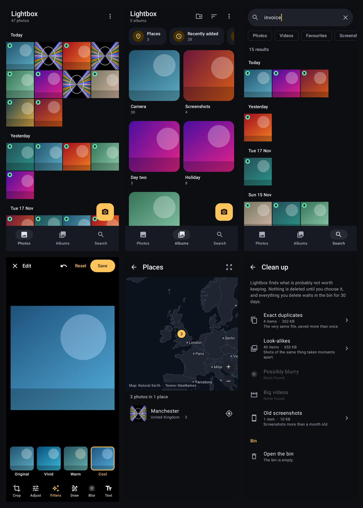

All your photos. Nobody else's business.
Lightbox is a gallery for Android that cannot go online. It shows every photo and video on the phone, finds them by what is in them and where they were taken, edits them, tidies them, and takes the hidden information out before you share. Everything happens on the phone.
Download Lightbox Android 13 or newer · about 34 MB · what is new

What it does
Every photo, by date
One long timeline with a handle to fly through the years. Pinch to change the size of the grid, hold and drag to select.
Albums are your folders
Nothing is copied or imported. Pin albums, choose covers, hide the ones you do not want. Thumbnail stores and other clutter are left out by themselves.
Search inside photos
Lightbox reads the words in your photos and works out what they show, so "invoice", "dog" or a street name finds them. It is all done on the phone.
Places, offline
A map with a pin wherever your photos were taken, and the same photos listed by town. The map and the town names are inside the app.
The Safe pill
Lightbox opens every file and marks the ones that hold nothing beyond the picture: no location, no date, no phone details.
Make safe and Share safe
Take the hidden information out of a photo, or out of the copy you send, without the picture itself being re-made.
An editor that keeps the original
Crop, straighten, light and colour, filters, draw, blur and text. It saves a copy unless you ask it to replace the photo. Videos can be trimmed and muted.
Tags, notes and stars
Your own words on any photo, with an album for each tag. Written into JPEG files in the standard way, so they travel with the photo.
Clean up
Exact duplicates, look-alike shots, blurry photos, big videos and old screenshots, found for you. Nothing is deleted until you choose it.
Shoot into an album
The camera button opens the phone's own camera. When you close it, what you took is in the album you chose, cleaned on the way in if you like.
A 30-day bin and Undo
Deleting never asks "are you sure". It goes to the bin, with Undo straight away and thirty days to change your mind.
Yours to keep
One small backup file holds your favourites, tags and settings. An optional lock uses the phone's own fingerprint or PIN.
No internet access
Lightbox does not ask Android for the internet permission. It cannot send or fetch anything, and you can check that yourself: Settings, Apps, Lightbox, Permissions. Reading the words in your photos, recognising what they show and naming the towns on the map are all done by parts that sit inside the app. The only cost is that the app cannot tell you about updates, so look at the releases page now and then.
What it will not do
- It does not back up your photos. They stay ordinary files in their ordinary folders. The backup file holds favourites, tags and settings, not pictures.
- The map has no streets. It shows coasts, borders and towns, which is what fits inside an app. A photo's details have an "Open in maps" button for the rest.
- It reads Latin-alphabet text (English and most European languages) and names about four hundred everyday things, in English.
- It does not group photos by face.
- RAW and GIF files cannot be cleaned and never get the Safe pill.
Installing
- Tap Download and open the file. Android will ask you to allow installs from your browser or file app.
- Play Protect may ask about an app it has not seen. Lightbox asks for access to all files because a gallery that can move, clean and delete photos in any folder needs it.
- Open Lightbox and switch on All files access. Usage access and Notifications are only for the camera button and can wait.
- Usage access is locked at first, because the app came from a download and not the Play Store. Try to switch Lightbox on once, so your phone shows "Restricted setting". Then open Settings, Apps, Lightbox, tap the three dots at the top right and choose Allow restricted settings. The app shows these steps too.
For phones with a 64-bit ARM processor, which covers most Android phones of recent years.